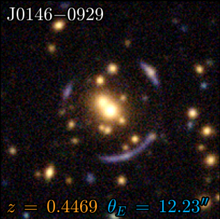

COOL-LAMPS VIII: Known Wide-separation Lensed Quasars and their Host Galaxies Reveal a Lack of Evolution in \$M_{\rm{BH}}/M_\star\$ Since \$z\sim 3\$
We studied six rare, wide-separation lensed quasars and their host galaxies. By combining multiple measurement techniques, we find these host galaxies include both star-forming and quiescent types. Our results show no clear evidence for evolution in the black hole-to-stellar mass ratio since early cosmic times. These strongly lensed systems are valuable tools for future research on how galaxies and their central black holes evolve together.

Link to Paper
COOL-LAMPS. VII. Quantifying Strong-lens Scaling Relations with 177 Cluster-scale Strong Gravitational Lenses in DECaLS
We measured the total mass within the Einstein radius for 177 galaxy cluster strong gravitational lenses found by the COOLLAMPS project, using photometry and redshifts from surveys. The results show strong correlations between cluster mass, luminosity, and the redshift of the central galaxy. The relationship between total mass and stellar mass is especially tight, suggesting that how efficiently clusters form stars may not change much with radius. These findings can help automate the discovery of strong gravitational lenses in large future surveys.

Precise Photometric Measurements from a 1903 Photographic Plate Using a Commercial Scanner
We demonstrate that star brightness can be measured on archival photographic plates using a standard scanner. Applying the method to a 1903 plate from Yerkes Observatory yields precise results (better than 0.10 mag), with most uncertainty due to the plate itself rather than the scanning. This low-cost approach broadens access to discoveries in historical plate collections. As an example, a possible supernova was identified in the galaxy NGC 7331 using these techniques.